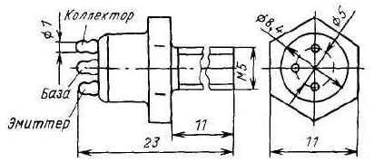
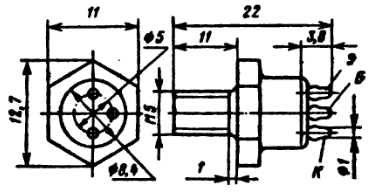
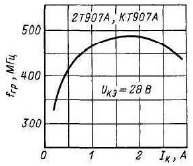
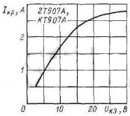
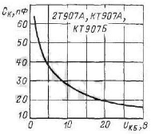
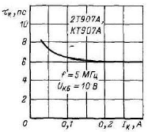
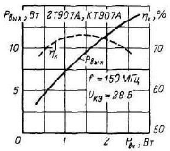
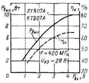
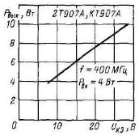

Транзистор биполярный мощный сверхвысокочастотный 2Т907А, КТ907А, КТ907Б
Транзисторы кремниевые эпитаксиально-планарные структуры n-p-n генераторные. Предназначены для применения в усилителях мощности, умножителях частоты и автогенераторах на частотах 100 ... 400 МГц при напряжении питания 28 В. Выпускаются в металлокерамическом корпусе с жесткими выводами и монтажным винтом. Вывод эмиттера электрически соединен с корпусом. Тип прибора указывается на боковой поверхности корпуса.
Масса транзистора не более 6 г.
Варианты конструкции:


Электрические параметры
|
Выходная мощность на частоте f = 400 МГц при UКЭ = 28 В |
|
| 2Т907А, КТ907А при PВХ = 4 Вт, не менее | 8 Вт |
| типовое значение | 10* Вт |
| КТ907Б при PВХ = 4 Вт, не менее | 6 Вт |
| типовое значение | 8* Вт |
| Коэффициент усиления по мощности на частоте f = 400 МГц при UКЭ = 28 В | |
| 2Т907А, КТ907А | 2 |
| КТ907Б | 1.5 |
| Коэффициент полезного действия коллектора при UКЭ = 28 В | |
| при PВХ = 4 Вт f = 400 МГц не менее | 45 % |
| типовое значение | 65* % |
| при f = 150 МГц не менее | 68* % |
| Модуль коэффициента передачи тока на высокой частоте при f = 100 МГц, UКЭ = 28 В, IК = 0.4 А не менее | |
| 2Т907А, КТ907А | 3.5 |
| КТ907Б | 3 |
| Критический ток на частоте f = 100 МГц при UКЭ = 10 В, типовое значение | |
| 2Т907А, КТ907А, не менее | 1.0 А |
| типовое значение | 1.8* А |
| КТ907Б, не менее | 0.8 А |
| Емкость коллекторного перехода при UКБ = 30 В не более | 20 пФ |
| Постоянная времени цепи обратной связи на высокой частоте при f = 5 МГц, UКБ = 10 В, IЭ = 30 мА не более | |
| 2Т907А, КТ907А | 15 пс |
| КТ907Б | 25 пс |
| Активная емкость коллектора при UКБ = 30 В, типовое значение | 3.5* пФ |
| Суммарная активная и пассивная емкость коллектора при UКБ = 30 В, типовое значение | 10* пФ |
| Емкость коллектор-эмиттер, типовое значение | 5* пФ |
| Емкость эмиттерного перехода при UЭБ = 0 В, типовое значение | |
| не более | 250 пФ |
| типовое значение | 220 пФ |
| Емкость вывода коллектора на корпус, типовое значение | 5* пФ |
| Емкость вывода базы на корпус, типовое значение | 1.3* пФ |
| Сопротивление эмиттера, типовое значение | 0.4* Ом |
| Сопротивление базы, типовое значение | 1* Ом |
| Индуктивность вывода эмиттера внутренняя, типовое значение | 0.8* нГн |
| Индуктивность вывода базы внутренняя, типовое значение | 2.5* нГн |
| Индуктивность базы у конца вывода, типовое значение | 4* нГн |
| Индуктивность вывода коллектора внутренняя, типовое значение | 2.5* нГн |
| Индуктивность коллектора у конца вывода, типовое значение | 4* нГн |
| Статический коэффициент передачи тока в схеме с общим эмиттером при UКЭ = 5 В, IК = 0.4 А | |
| не менее | 10* |
| типовое значение | 50* |
| Граничное напряжение коллектор-эмиттер при IК = 0.2 А не менее | 40* В |
| Напряжение насыщения коллектор-эмиттер при IК = 0.25 А, IБ = 0.05 А, типовое значение | 0.35* В |
| Напряжение насыщения база-эмиттер при IК = 0.25 А, IБ = 0.05 А, типовое значение | 0.9* В |
| Обратный ток коллектор-эмиттер при RЭБ = 100 Ом, не более | |
| T = +25 0C, UКЭ = 65 В, 2Т907А | 2 мА |
| T = +25 0C, UКЭ = 60 В, КТ907А, КТ907Б | 3 мА |
| T = +85 0C, UКЭ = 60 В, КТ907А, КТ907Б | 6 мА |
| T = +130 0C, UКЭ = 65 В, 2Т907А | 4 мА |
| Обратный ток эмиттер-база UЭБ = 4 В, не более | 0.25 мА |
| T = +25 0C, 2Т907А | 0.25 мА |
| T = +25 0C, КТ907А, КТ907Б | 0.35 мА |
| T = +85 0C, КТ907А, КТ907Б | 0.7 мА |
| T = +130 0C, 2Т907А | 0.25 мА |
Предельные эксплуатационные данные
|
Постоянное напряжение коллектор-эмиттер при RЭБ ≤ 100 Ом |
|
| 2Т907А | 65 В |
| КТ907А, КТ907Б | 60 В |
| Пиковое напряжение коллектор-эмиттер в режиме генератора мощности при f = 100 МГц | |
| 2Т907А | 75 В |
| КТ907А, КТ907Б | 70 В |
| Постоянное напряжение база-эмиттер | 4 В |
| Постоянный ток коллектора | 1 А |
| Импульсный ток коллектора при tИ ≤ 10 мкс Q ≥ 100 | 3 А |
| Постоянный ток базы | 0.4 А |
| Средняя рассеиваемая мощность коллектора в динамическом режиме1 | |
| 2Т907А | |
| при TК ≤ +25 0C | 16 Вт |
| при TК = +125 0C | 3.3 Вт |
| КТ907А, КТ907Б | |
| при TК ≤ +25 0C | 13.5 Вт |
| при TК = +85 0C | 4.7 Вт |
| Тепловое сопротивление переход-корпус | 7.5 K/Вт |
| Температура перехода | |
| 2Т907А | +150 0C |
| КТ907А, КТ907Б | +125 0C |
| Температура корпуса | |
| 2Т907А | +125 0C |
| КТ907А, КТ907Б | +85 0C |
| Температура окружающей среды | |
| 2Т907А | -60 0C ... TК = +125 0C |
| КТ907А, КТ907Б | -40 0C ... TК = +85 0C |
Примечание
*) Звездочкой отмечены параметры или их значения, приведенные в справочных данных ТУ. При производстве полупроводниковых приборов они могут не контролироваться.
1) Средняя рассеиваемая мощность коллектора в динамическом режиме при TК > +25 0C для 2Т907А определяется по формуле (150 - TК)/7.5, Вт, для КТ907А, КТ907Б - по формуле (125 - TК)/7.5, Вт.
Пайка выводов допускается на расстоянии не менее 1 мм от корпуса в течение времени не более 3 с при температуре не более +260 0C. Обязателен теплоотвод между корпусом и местом пайки.
Транзистор должен прижиматься к теплоотводу с осевым усилием 750 Н (крутящий момент 1.2 Н ∙ м)
Усилие, перпендикулярное оси выводов, не более 0.5 Н, запрещается изгиб и кручение выводов.
При использовании транзисторов в режимах класса А рекомендуется снижать напряжение питания, при этом постоянная рассеиваемая мощность коллектора не должна превышать 10 Вт при TК ≤ 50 0C и 2.5 Вт при TК = 125 0C (для 2Т907А).
Дополнительные характеристики

Рис. 1. Зависимость граничной частоты от тока коллектора.

Рис. 2. Зависимость критического тока от напряжения коллектор-эмиттер.

Рис. 3. Зависимость емкости коллекторного перехода от напряжения коллектор-база.

Рис. 4. Зависимость постоянной времени цепи обратной связи от тока коллектора.
 
Рис. 5. Зависимость выходной мощности и коэффициента полезного действия от входной мощности.

Рис. 6. Зависимость выходной мощности от напряжения коллектор-эмиттер.
Ссылки:
26.09.2019
Альтернативные источники
энергии
Компьютеры и
Интернет
Магнитные поля
Механотронные системы
Перспективные
разработки
Электроника и технология